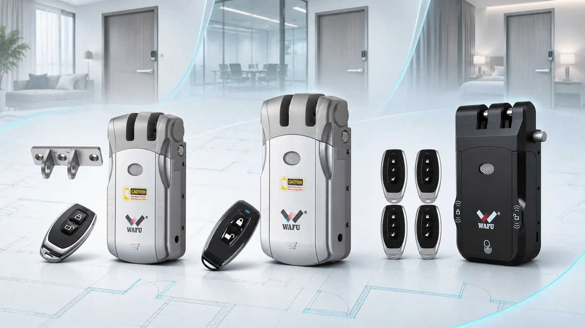
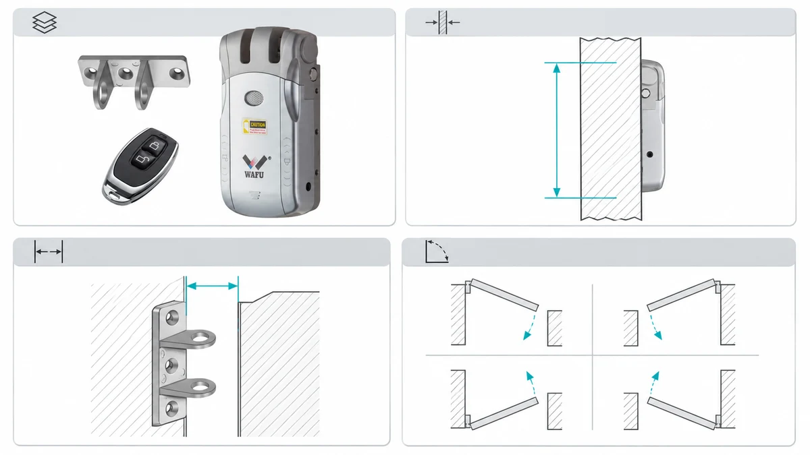

这是一份面向经销商、系统集成商和项目团队的隐藏式 WAFU 门锁项目简报。文章把已确认的产品事实与现场核查分开，并给出门体数据采集、选型比对、样品验证和交接记录的准备方法，帮助项目在不承诺万能兼容的前提下进入报价和打样。
项目边界
在打样前确认门体尺寸、开门方向、锁体安装空间和所需开锁方式，并记录使用场景、门的数量与交付时间。具体选型须结合项目门体和运行要求；本简报不能代替现场勘测、安装设计或样品验收。
建议把项目输入分成三栏：已由文件或现场证据确认的事实、采购方提出的目标、仍需供应商或安装方确认的问题。三类信息不要混写成一个“产品要求”，否则报价、打样和后续变更时很难判断哪些内容已经批准。对暂时未知的尺寸或功能，不要用估算值填满表格，应注明测量人、计划确认时间和负责方。
立项记录至少应包含项目联系人、部署地点或市场、门的用途、门数量、目标型号（如已有）、期望采购和交付时间、样品数量、安装责任方及决策人。多栋楼、多种门型或分批交付的项目，应为不同门型或批次分别编号，不要把一樘样板门的数据直接套用到全部门上。
现场确认清单
- 记录门体材质、厚度、开门方向、门框结构，以及锁体和锁扣的可用安装空间。
- 提供门体照片和关键尺寸；尚未测量或需要复核的项目明确标记。
- 核对所需开锁方式、供电和应急开门条件，明确现场勘测与安装的负责人。
- 将已确认的型号规格与需要样品或现场测试的事项分开，报价对应具体型号和配件清单。
- 为每樘门设置唯一编号，记录建筑、楼层、房间或门组位置，并确认照片和尺寸都能对应到该编号。
- 拍摄门的正反面、侧边、锁体安装区域、门框和锁扣位置；照片应能辨认测量位置。若照片无法显示尺寸，可另附带测量标注的草图，并注明拍摄或测量日期。
- 记录尺寸的测量基准和单位，注明哪些尺寸来自现场实测、图纸或第三方资料。门体结构、饰面或现有开孔不清楚时，列为待核项目，不要据此承诺可以直接安装。
- 按项目使用场景记录开门频次、使用人群和日常管理方式，并说明哪些属于采购需求、哪些是现场运行假设；实际产品是否满足要求须再对照对应型号资料或样品确认。
- 逐项列出希望采用的开锁方式、授权对象、应急进入要求及可能涉及的系统对接。需求表述应写“项目需要什么”，不能把尚未确认的功能写成目标型号已经具备的能力。
- 记录现场供电或电池更换条件、网络或控制器等外部依赖（如项目涉及），并标记由采购方、集成商还是供应商负责确认。不同门组条件不一致时分别登记。
- 对不适合只凭图纸判断的项目，写明验证方法，例如补测尺寸、提供样品、制作安装样板或由安装方复核；同时指定负责人和关闭日期。
建议使用一行对应一樘门的调查表，字段可包括：门编号、门体类型、实测尺寸、开门方向、现有开孔、目标开锁方式、照片编号、证据来源、待确认事项、负责人、状态和更新时间。状态可用“已确认、待补资料、待样品验证、暂不适用”等明确词语，避免只写“差不多”或“现场再看”。

*图 1：隐藏式门锁项目选型示意，实际产品与配件以确认的配置为准。*
产品与配置确认
询价前可参考 WF-010、WF-019 和 WF-026 的产品资料，并与 WAFU 确认实际配置。不同型号的功能和选配不能相互套用。产品页用于初步筛选，不能代替项目配置确认；对产品页没有明确列出的尺寸、权限逻辑、外部接口、附件或环境要求，应作为书面问题提交确认。
建立一张“需求—证据—结论”比对表。每一行写一个可核对的需求，例如门体尺寸范围、开锁方式、配件、安装方式或项目文件；旁边记录对应型号资料的出处、供应商答复、样品验证结果和最终责任人。若资料与现场条件不一致，应先列出差异，再决定补测、换型、调整安装方案或暂缓该门型，不要在表格中直接把差异改成“兼容”。
报价阶段还应冻结询价的配置基线：型号、实际选配、数量、包装要求、目的市场、所需文件、样品用途及报价有效范围。对于不同门型或不同配置，要求分别报价或明确适用范围，避免把一个样品的结论延伸到未验证的门型。供应商回复后，将口头讨论形成书面确认，并把未答复的问题保留在清单中。
项目交接
采购方整理需求与目标数量，安装方提供门体数据及现场限制，供应商核对型号、配件和文件版本。各方应在样品确认前约定验收负责人、检查项目、问题反馈方式及资料更新责任。责任分工最好写到具体岗位或联系人，并明确谁有权批准配置、接受偏差或关闭问题。
建议按照项目节点交接资料：
- 询价前：采购方提交项目范围、目标数量、门体资料、目标市场和所需交付文件；未知数据进入待确认清单。
- 样品前：供应商以书面形式确认拟送样的型号、配置、配件和适用边界；安装方确认样品要验证的门型与安装条件。
- 样品检查时：记录样品编号、检查日期、检查人员、对照的产品资料、发现的问题、照片或测量证据，以及每个问题的责任人和计划完成日期。
- 批准或退回时：结论写明“批准用于下一阶段”“需整改后复验”或“当前配置不适用”，并注明批准范围。对未通过的项目不得用没有范围说明的“样品 OK”代替详细结果。
- 交付安装前：移交最终型号配置、配件清单、产品文件版本、现场限制、安装方需要复核的项目和仍未关闭的风险。
- 项目变更后：门体、数量、安装地点、访问需求或选配发生变化时，标出受影响的门编号和文件，并重新确认原有结论是否仍然适用。
交接记录应包括门体照片及尺寸、型号配置清单、样品意见、安装资料和未关闭问题。每份文件注明版本、日期、负责人和适用门组；未决项应记录影响、临时处理方式、责任人和关闭期限。门体条件变化时重新核对有关配置，不能直接沿用其他项目的结论。最终交接前由采购方、供应商和安装方分别确认自己负责的部分，而不是让单一签字覆盖所有技术责任。

*图 2：门体与安装条件调查示意；具体尺寸和安装方式须现场核实。*
常见问题
是否适用于所有门体？
不能一概而论。必须结合实际门体、安装空间、选定型号和项目测试确认。至少应核对门体与锁体空间、开门方向、锁扣位置、所需配件及安装路径；条件不同的门型应分别评估，不能只凭产品名称或一张正面照片下结论。
项目简报能否代替安装审批？
不能。本文是采购与交接清单，安装方仍需核查现场并遵循确认的产品资料。即使供应商已确认某个型号，也应由安装方核对实际门体与施工条件；项目要求涉及当地规范或物业审批时，应由项目指定的责任方另行确认。
询价时应提供哪些资料？
提供目标型号、门体信息、开锁方式、配件、预计数量、所需文件和样品验收条件；未知事项应明确标注。若项目门型较多，请同时提供门编号表、不同门型的照片和尺寸来源，并说明哪些门型需要优先打样。这样可以把供应商答复、现场复核和样品验证分别安排，而不是在报价后才追问关键输入。
下一步
提交项目评估，附上门体照片、尺寸、目标型号及所需配置，并列出门数量、目的市场、样品计划、待核问题和希望完成的时间节点。请勿在公开表单中发送不适合公开的门禁凭证或个人信息；如需交换敏感资料，应与项目联系人另行确认安全的传递方式。